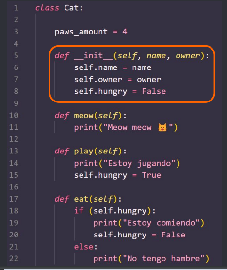
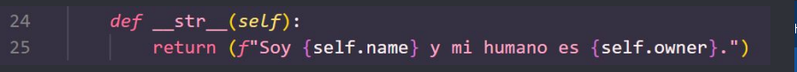

Resumen
1. Introducción a objetos
- La Programación Orientada a Objetos (POO) es un paradigma de programación mediante el cual pensamos soluciones a problemas complejos mediante objetos
- Podemos pensar un objeto como una colección de datos (atributos) y comportamientos (métodos)
- Cualquier cosa o ente de la vida real puede ser pensado como un objeto
- Por ejemplo:
- Una calculadora es un objeto. Notar que los datos son sustantivos y los comportamientos son verbos
- Todos los lenguajes de programación modernos utilizan POO
- Agiliza la implementación de funcionalidades y ahorra tiempo, gracias a la abstracción que provee
- Evita código espagueti (anidaciones)
- Agiliza el análisis de un caso de uso al poder ser pensado como algo de la vida real
- Fomenta la reutilización de código
- Permite crear sistemas más complejos y adaptables
2. POO vs Estructurada
- Veamos un ejemplo en código
- Vamos a hacer una máquina expendedora de cafés en Python usando el paradigma de programación estructurada
- Nuestra máquina debe solicitar el ingreso de dinero por parte del usuario y de una opción de tamaño de café. Si el presupuesto ingresado es suficiente para comprar el café, debe permitir la acción, caso contrario debe mostrar mensaje de error
- El main
Las funciones
- Notar que ningún paradigma es mejor que otro
- Objetos puede resultar abrumador para programas sencillos, mientras que Estructurada facilita el trabajo
- Son dos enfoques para resolver problemas, existen muchos más paradigmas de programación
3. Objetos en Python
- Nosotros ya estuvimos trabajando con objetos en Python incluso programando en el paradigma estructurado
- Todo es un objeto en Python
- Recordemos: un objeto es una colección de datos (atributos) y comportamiento (métodos)
- Hemos usado, por ejemplo, strings. Las strings tienen datos (caracteres) y comportamiento (upper(), lower(), etc.). También hemos usado listas, con comportamientos como append(), remove(), sort()
- Ahora vamos a aprender a crear nuestros propios objetos en Python. Repasemos conceptos principales:
- Los atributos son datos, son estados o características de nuestros objetos. Los podemos pensar como variables
- Los métodos son comportamiento o acciones de nuestros objetos. Los podemos pensar como funciones
- Una clase es una entidad que define estados (atributos) y comportamientos (métodos). Lo podemos pensar como una plantilla de objetos, como algo más genérico
- Un objeto es una instancia de una clase, es algo más concreto
- Un constructor es un método que inicializa un objeto con el conjunto mínimo de datos que necesita para existir
- Ejemplo: pensemos en un gato
- ¿Qué atributos o características tiene un gato? nombre - dueño - color - género
- ¿Qué métodos o comportamientos tiene un gato? jugar - maullar - comer - dormir
- ¿Qué característica comparten todos los gatos? tienen 4 patas
- Vamos a crear una clase Gato sencilla en Python con algunos de estos métodos y atributos
- Este es el código de nuestra clase Cat
- Vamos a estudiar la sintaxis de clases y objetos en Python, las partes que componen el código, y cómo instanciar objetos
Nota: el ejemplo está hecho en un solo archivo para simplificar, pero lo correcto es tener la clase en un archivo con el nombre de la clase, e instanciarla en otro lado
- Una clase se define con la palabra reservada class seguida del nombre de la clase, con la primer letra en mayúscula, seguido de :
- El constructor de la clase se define con __init__.
Como parámetros recibe los valores iniciales de atributos de instancia y el parámetro self, el cual hace referencia al objeto instanciado sobre el cual se está invocando un método. Es análogo al this de otros lenguajes

Como cuerpo del constructor, definimos e inicializamos los atributos con los parámetros recibidos, aunque también podemos inicializarlos con un valor por defecto. Notar que siempre se hace referencia al self antes del atributo
- Esto es un atributo de clase. Es un atributo que comparten todas las instancias de una misma clase. Por ejemplo, todos los gatos tienen 4 patas
- Un método se define de la misma manera que una función. Usamos la palabra reservada def, seguida del nombre del método y :. Notar que todos los métodos deben recibir el parámetro self
- Notar que los métodos pueden alterar los atributos de instancia y tener estructuras de control como las que usamos en programación estructurada
De esta manera instanciamos objetos en Python. Al instanciar un objeto, estamos llamando al constructor de la clase para inicializar los atributos de nuestra instancia con los parámetros indicados
- Luego podemos instanciar otro objeto Cat e invocar métodos sobre éste también
En Python, podemos agregar un método especial para mostrar objetos. Podemos hacer cosas así:
Esto se logra agregando a la clase el método __str__, el cual debe devolver la cadena que queremos mostrar

- En definitiva, con las clases creamos “plantillas”, a partir de las cuales podemos crear múltiples instancias diferentes